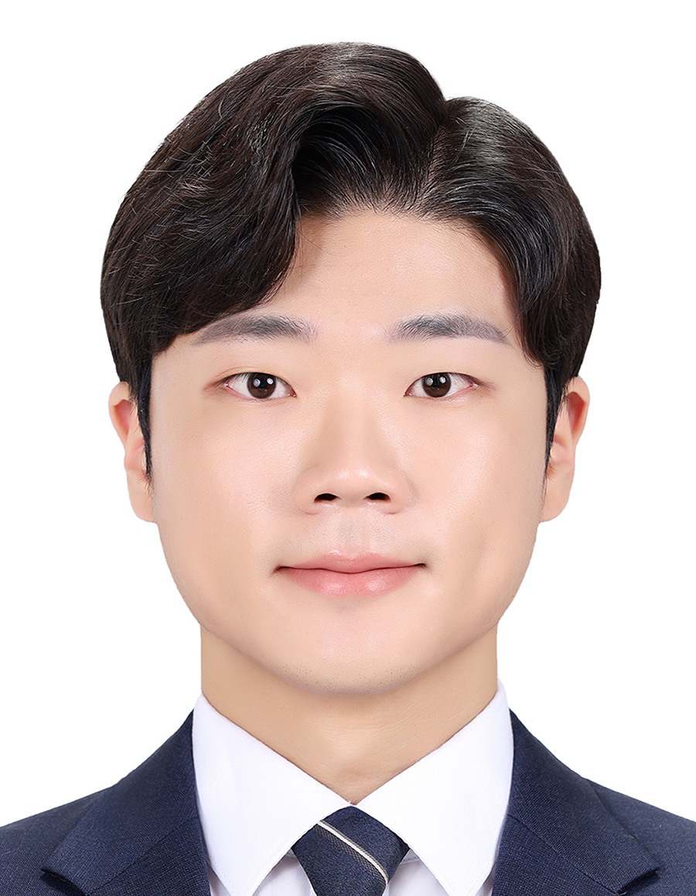
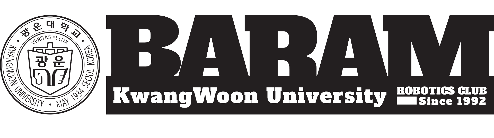

|
Mingyu Park I'm a Master's student of Robotics program at KAIST in South Korea, advised by Prof. Donghwan Lee. My research goal is to build real‑world robots that can perform control tasks with human‑level abilities and generalize to unseen situations using artificial general intelligence (AGI). I’m especially interested in developing practical methods and understanding underlying theory for sequential decision‑making problems. My current mission toward this goal is to devise a general method that can recover an expert policy from static datasets under high‑dimensional sensory input.
|
 |
{kind=link}
Research interestFormally, my research interest interleaves between offline reinforcement learning, self‑supervised learning, and foundation models. I'm also interested in research topics about physical intelligence that may enable robots to understand the underlying physical rules of the real-world. |
Recent News 📣 |
|
(Feb, 2025) I finally graduated at KAIST with the Master's degree with the robotics program! (May, 2024) I attended to ICRA in Yokohama, Japan! (Aug., 2023) I participated in Elite Summer School in Odense, Denmark! |
Publications |
|
|
Computational Cost Reduction Method for HQP-based Hierarchical Controller for Articulated Robot
Mingyu Park, Dongwhan Kim, Yongwhan Oh, Yisoo Lee KROS, 2022 project page Reduced hierarchical quadratic programming (rHQP) is an optimal real-time controller for articulated redundant dual-arm manipulators. rHQP solves about x2.44 faster than the conventional HQP on average. |
Education |
|
Kwangwoon University (Mar. 2017 - Feb. 2023) B.S. in Robotics Engineering |
|
|
KAIST(Korea Advanced Institute of Science and Technology) (Mar. 2023 - Feb. 2025) M.S. in Robotics Program |
Work experiences |
|
KIST (Jun. 2021 - Dec. 2021) Undergraduate Research Assistant advised by Dr. Yisoo Lee. |
|
|
SNU (Seoul National University) (Jan. 2022 - Oct. 2022) Undergraduate Research intern advised by Prof. Jaeheung Park. Check details at project page! |
Extracurricular activities |
|  |
BARAM (Academic Robotics Club) (Mar. 2020 - Dec. 2022) Designed and taught an academic seminar regarding robotics, including computer vision and control engineering. Check details at project page! |
|
International Elite Summer School in Robotics & Entrepreneurship (Aug. 2023). Participated in the summer school to have a better academic knowledge of robotics, regarding advanced techniques for designing robotic systems and entrepreneurship in robotic startup companies (e.g. Universal Robots) in Denmark. |
Awards & Honors |
Awards
Honors |
{kind=link}
{kind=link}
|
Template is borrowed from here. |